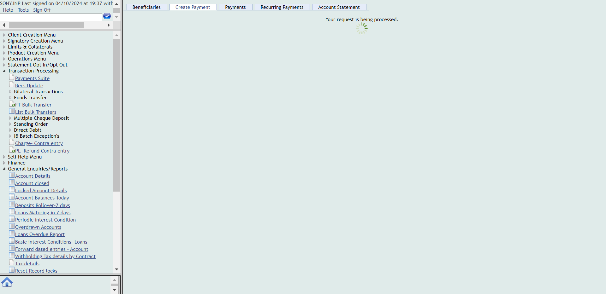
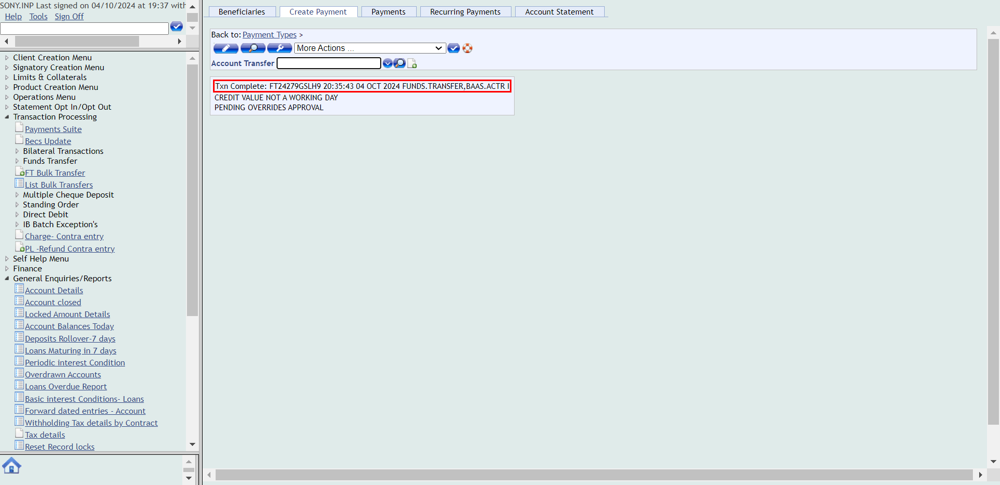
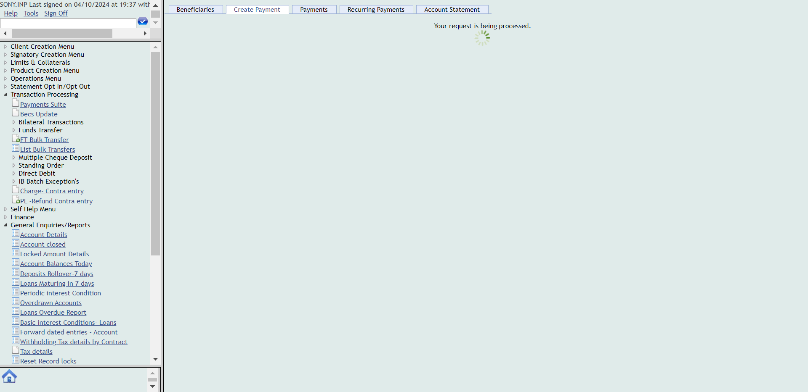
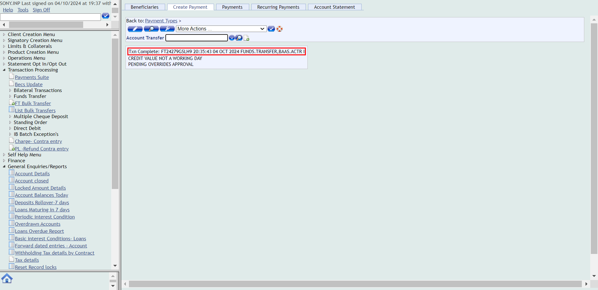

-
Payment
16:01:36 PM / 43:51:732 Fail
Payment
10.04.2024 16:01:36 10.04.2024 16:15:27 43:51:732 · #test-id=2PassInternal transfer over limitWhen close all the other opened windowsWhen User opens the T24 Url Then User should be able to login to T24
Then User should be able to login to T24 Then The user should be able to fill the commandlineAnd user should be able to see the the balance of the account before performing internal transfer over limitThen The user should be able to navigate to Account transfer buttonAnd Enter the details in the account transfer for internal transfer overlimitThen Click on validateAnd Click on commitThen check whether the override Authorisation Required message is appearing and click on acceptoverrideThen Verify whether the transaction complete message is displayed after commitingAnd The User clicks on signoffThen Login to authoriser accountThen The user should be able to fill the commandlineAnd Navigate to unauthorised transactionsThen Authorize the transactionThen Verify whether the transaction complete message is displayed after commiting
Then The user should be able to fill the commandlineAnd user should be able to see the the balance of the account before performing internal transfer over limitThen The user should be able to navigate to Account transfer buttonAnd Enter the details in the account transfer for internal transfer overlimitThen Click on validateAnd Click on commitThen check whether the override Authorisation Required message is appearing and click on acceptoverrideThen Verify whether the transaction complete message is displayed after commitingAnd The User clicks on signoffThen Login to authoriser accountThen The user should be able to fill the commandlineAnd Navigate to unauthorised transactionsThen Authorize the transactionThen Verify whether the transaction complete message is displayed after commiting And Navigate to account entriesThen Enter the account number and click on find buttonAnd Verify whether the internal transfer over limittransaction is reflected in the accountentries
And Navigate to account entriesThen Enter the account number and click on find buttonAnd Verify whether the internal transfer over limittransaction is reflected in the accountentries FailInternal Transfer overlimit narrativeWhen close all the other opened windowsWhen User opens the T24 Url
FailInternal Transfer overlimit narrativeWhen close all the other opened windowsWhen User opens the T24 Url Then User should be able to login to T24Then The user should be able to fill the commandlineAnd The user should be able to click on general enquiries buttomAnd click on the IB-view of account entriesThen Enter the account numberAnd click on find buttonAnd The details of internal transfer overlimit should be reflected in the narrativescom.frameium.stepdef.Hooks.afterEveryStep(io.cucumber.java.Scenario)FailInternal Transfer overlimit narrativeWhen close all the other opened windowscom.frameium.stepdef.Ufs.IBPayments.afterStep(io.cucumber.java.Scenario)com.frameium.stepdef.Hooks.afterEveryStep(io.cucumber.java.Scenario)When User opens the T24 UrlStep skippedThen User should be able to login to T24Step skippedThen The user should be able to fill the commandlineStep skippedAnd The user should be able to click on general enquiries buttomStep skippedAnd click on the IB-view of account entriesStep skippedThen Enter the account numberStep skippedAnd click on find buttonStep skippedAnd The details of internal transfer overlimit should be reflected in the narrativesStep skippedFailExternal transfer over limitWhen close all the other opened windowscom.frameium.stepdef.Ufs.IBPayments.afterStep(io.cucumber.java.Scenario)com.frameium.stepdef.Hooks.afterEveryStep(io.cucumber.java.Scenario)When User opens the T24 UrlStep skippedThen User should be able to login to T24Step skippedThen The user should be able to fill the commandlineStep skippedAnd user should be able to see the the balance of the account before performing internal transferStep skippedThen The user should be able to navigate to Account transfer buttonStep skippedAnd Enter the details in the account transfer for External transfer overlimitStep skippedThen Click on validateStep skippedAnd Click on commitStep skippedThen check whether the override Authorisation Required message is appearing and click on acceptoverrideStep skippedThen Verify whether the transaction complete message is displayed after commitingStep skippedAnd The User clicks on signoffStep skippedThen Login to authoriser accountStep skippedThen The user should be able to fill the commandlineStep skippedAnd Navigate to unauthorised transactionsStep skippedThen Authorize the transactionStep skippedThen Verify whether the transaction complete message is displayed after commitingStep skippedAnd Navigate to account entriesStep skippedThen Enter the account number and click on find buttonStep skippedAnd Verify whether the transaction is reflected in the accountentriesStep skippedFailExternal transfer over limitWhen close all the other opened windowscom.frameium.stepdef.Ufs.IBPayments.afterStep(io.cucumber.java.Scenario)com.frameium.stepdef.Hooks.afterEveryStep(io.cucumber.java.Scenario)When User opens the T24 UrlStep skippedThen User should be able to login to T24Step skippedThen The user should be able to fill the commandlineStep skippedAnd user should be able to see the the balance of the account before performing internal transferStep skippedThen The user should be able to navigate to Account transfer buttonStep skippedAnd Enter the details in the account transfer for External transfer overlimitStep skippedThen Click on validateStep skippedAnd Click on commitStep skippedThen check whether the override Authorisation Required message is appearing and click on acceptoverrideStep skippedThen Verify whether the transaction complete message is displayed after commitingStep skippedAnd The User clicks on signoffStep skippedThen Login to authoriser accountStep skippedThen The user should be able to fill the commandlineStep skippedAnd Navigate to unauthorised transactionsStep skippedThen Authorize the transactionStep skippedThen Verify whether the transaction complete message is displayed after commitingStep skippedAnd Navigate to account entriesStep skippedThen Enter the account number and click on find buttonStep skippedAnd Verify whether the transaction is reflected in the accountentriesStep skippedFailExternal Transfer overlimit narrativeWhen close all the other opened windowscom.frameium.stepdef.Ufs.IBPayments.afterStep(io.cucumber.java.Scenario)com.frameium.stepdef.Hooks.afterEveryStep(io.cucumber.java.Scenario)When User opens the T24 UrlStep skippedThen User should be able to login to T24Step skippedThen The user should be able to fill the commandlineStep skippedAnd The user should be able to click on general enquiries buttomStep skippedAnd click on the IB-view of account entriesStep skippedThen Enter the account numberStep skippedAnd click on find buttonStep skippedAnd The details of internal transfer overlimit should be reflected in the narrativesStep skippedFailExternal Transfer overlimit narrativeWhen close all the other opened windowscom.frameium.stepdef.Ufs.IBPayments.afterStep(io.cucumber.java.Scenario)com.frameium.stepdef.Hooks.afterEveryStep(io.cucumber.java.Scenario)When User opens the T24 UrlStep skippedThen User should be able to login to T24Step skippedThen The user should be able to fill the commandlineStep skippedAnd The user should be able to click on general enquiries buttomStep skippedAnd click on the IB-view of account entriesStep skippedThen Enter the account numberStep skippedAnd click on find buttonStep skippedAnd The details of internal transfer overlimit should be reflected in the narrativesStep skipped
Then User should be able to login to T24Then The user should be able to fill the commandlineAnd The user should be able to click on general enquiries buttomAnd click on the IB-view of account entriesThen Enter the account numberAnd click on find buttonAnd The details of internal transfer overlimit should be reflected in the narrativescom.frameium.stepdef.Hooks.afterEveryStep(io.cucumber.java.Scenario)FailInternal Transfer overlimit narrativeWhen close all the other opened windowscom.frameium.stepdef.Ufs.IBPayments.afterStep(io.cucumber.java.Scenario)com.frameium.stepdef.Hooks.afterEveryStep(io.cucumber.java.Scenario)When User opens the T24 UrlStep skippedThen User should be able to login to T24Step skippedThen The user should be able to fill the commandlineStep skippedAnd The user should be able to click on general enquiries buttomStep skippedAnd click on the IB-view of account entriesStep skippedThen Enter the account numberStep skippedAnd click on find buttonStep skippedAnd The details of internal transfer overlimit should be reflected in the narrativesStep skippedFailExternal transfer over limitWhen close all the other opened windowscom.frameium.stepdef.Ufs.IBPayments.afterStep(io.cucumber.java.Scenario)com.frameium.stepdef.Hooks.afterEveryStep(io.cucumber.java.Scenario)When User opens the T24 UrlStep skippedThen User should be able to login to T24Step skippedThen The user should be able to fill the commandlineStep skippedAnd user should be able to see the the balance of the account before performing internal transferStep skippedThen The user should be able to navigate to Account transfer buttonStep skippedAnd Enter the details in the account transfer for External transfer overlimitStep skippedThen Click on validateStep skippedAnd Click on commitStep skippedThen check whether the override Authorisation Required message is appearing and click on acceptoverrideStep skippedThen Verify whether the transaction complete message is displayed after commitingStep skippedAnd The User clicks on signoffStep skippedThen Login to authoriser accountStep skippedThen The user should be able to fill the commandlineStep skippedAnd Navigate to unauthorised transactionsStep skippedThen Authorize the transactionStep skippedThen Verify whether the transaction complete message is displayed after commitingStep skippedAnd Navigate to account entriesStep skippedThen Enter the account number and click on find buttonStep skippedAnd Verify whether the transaction is reflected in the accountentriesStep skippedFailExternal transfer over limitWhen close all the other opened windowscom.frameium.stepdef.Ufs.IBPayments.afterStep(io.cucumber.java.Scenario)com.frameium.stepdef.Hooks.afterEveryStep(io.cucumber.java.Scenario)When User opens the T24 UrlStep skippedThen User should be able to login to T24Step skippedThen The user should be able to fill the commandlineStep skippedAnd user should be able to see the the balance of the account before performing internal transferStep skippedThen The user should be able to navigate to Account transfer buttonStep skippedAnd Enter the details in the account transfer for External transfer overlimitStep skippedThen Click on validateStep skippedAnd Click on commitStep skippedThen check whether the override Authorisation Required message is appearing and click on acceptoverrideStep skippedThen Verify whether the transaction complete message is displayed after commitingStep skippedAnd The User clicks on signoffStep skippedThen Login to authoriser accountStep skippedThen The user should be able to fill the commandlineStep skippedAnd Navigate to unauthorised transactionsStep skippedThen Authorize the transactionStep skippedThen Verify whether the transaction complete message is displayed after commitingStep skippedAnd Navigate to account entriesStep skippedThen Enter the account number and click on find buttonStep skippedAnd Verify whether the transaction is reflected in the accountentriesStep skippedFailExternal Transfer overlimit narrativeWhen close all the other opened windowscom.frameium.stepdef.Ufs.IBPayments.afterStep(io.cucumber.java.Scenario)com.frameium.stepdef.Hooks.afterEveryStep(io.cucumber.java.Scenario)When User opens the T24 UrlStep skippedThen User should be able to login to T24Step skippedThen The user should be able to fill the commandlineStep skippedAnd The user should be able to click on general enquiries buttomStep skippedAnd click on the IB-view of account entriesStep skippedThen Enter the account numberStep skippedAnd click on find buttonStep skippedAnd The details of internal transfer overlimit should be reflected in the narrativesStep skippedFailExternal Transfer overlimit narrativeWhen close all the other opened windowscom.frameium.stepdef.Ufs.IBPayments.afterStep(io.cucumber.java.Scenario)com.frameium.stepdef.Hooks.afterEveryStep(io.cucumber.java.Scenario)When User opens the T24 UrlStep skippedThen User should be able to login to T24Step skippedThen The user should be able to fill the commandlineStep skippedAnd The user should be able to click on general enquiries buttomStep skippedAnd click on the IB-view of account entriesStep skippedThen Enter the account numberStep skippedAnd click on find buttonStep skippedAnd The details of internal transfer overlimit should be reflected in the narrativesStep skipped
-
java.lang.NullPointerException
1 tests
java.lang.NullPointerException
1 failedStatus Timestamp TestName Fail 16:07:43 PM And The details of internal transfer overlimit should be reflected in the narratives Payment.Internal Transfer overlimit narrative.And The details of internal transfer overlimit should be reflected in the narratives -
org.openqa.selenium.remote.UnreachableBrowserException
1 tests
org.openqa.selenium.remote.UnreachableBrowserException
1 failedStatus Timestamp TestName Fail 16:14:43 PM com.frameium.stepdef.Hooks.afterEveryStep(io.cucumber.java.Scenario) Payment.Internal Transfer overlimit narrative.com.frameium.stepdef.Hooks.afterEveryStep(io.cucumber.java.Scenario)Fail 16:15:10 PM When close all the other opened windows Payment.Internal Transfer overlimit narrative.When close all the other opened windowsFail 16:15:11 PM com.frameium.stepdef.Ufs.IBPayments.afterStep(io.cucumber.java.Scenario) Payment.Internal Transfer overlimit narrative.com.frameium.stepdef.Ufs.IBPayments.afterStep(io.cucumber.java.Scenario)Fail 16:15:11 PM com.frameium.stepdef.Hooks.afterEveryStep(io.cucumber.java.Scenario) Payment.Internal Transfer overlimit narrative.com.frameium.stepdef.Hooks.afterEveryStep(io.cucumber.java.Scenario)Fail 16:15:12 PM When close all the other opened windows Payment.External transfer over limit.When close all the other opened windowsFail 16:15:13 PM com.frameium.stepdef.Ufs.IBPayments.afterStep(io.cucumber.java.Scenario) Payment.External transfer over limit.com.frameium.stepdef.Ufs.IBPayments.afterStep(io.cucumber.java.Scenario)Fail 16:15:13 PM com.frameium.stepdef.Hooks.afterEveryStep(io.cucumber.java.Scenario) Payment.External transfer over limit.com.frameium.stepdef.Hooks.afterEveryStep(io.cucumber.java.Scenario)Fail 16:15:15 PM When close all the other opened windows Payment.External transfer over limit.When close all the other opened windowsFail 16:15:17 PM com.frameium.stepdef.Ufs.IBPayments.afterStep(io.cucumber.java.Scenario) Payment.External transfer over limit.com.frameium.stepdef.Ufs.IBPayments.afterStep(io.cucumber.java.Scenario)Fail 16:15:18 PM com.frameium.stepdef.Hooks.afterEveryStep(io.cucumber.java.Scenario) Payment.External transfer over limit.com.frameium.stepdef.Hooks.afterEveryStep(io.cucumber.java.Scenario)Fail 16:15:22 PM When close all the other opened windows Payment.External Transfer overlimit narrative.When close all the other opened windowsFail 16:15:23 PM com.frameium.stepdef.Ufs.IBPayments.afterStep(io.cucumber.java.Scenario) Payment.External Transfer overlimit narrative.com.frameium.stepdef.Ufs.IBPayments.afterStep(io.cucumber.java.Scenario)Fail 16:15:24 PM com.frameium.stepdef.Hooks.afterEveryStep(io.cucumber.java.Scenario) Payment.External Transfer overlimit narrative.com.frameium.stepdef.Hooks.afterEveryStep(io.cucumber.java.Scenario)Fail 16:15:26 PM When close all the other opened windows Payment.External Transfer overlimit narrative.When close all the other opened windowsFail 16:15:27 PM com.frameium.stepdef.Ufs.IBPayments.afterStep(io.cucumber.java.Scenario) Payment.External Transfer overlimit narrative.com.frameium.stepdef.Ufs.IBPayments.afterStep(io.cucumber.java.Scenario)Fail 16:15:27 PM com.frameium.stepdef.Hooks.afterEveryStep(io.cucumber.java.Scenario) Payment.External Transfer overlimit narrative.com.frameium.stepdef.Hooks.afterEveryStep(io.cucumber.java.Scenario)
-
@beforeCOBScenarios1
7 tests
@beforeCOBScenarios1
1 passed 6 failedStatus Timestamp TestName Pass 16:01:36 PM Internal transfer over limit Payment.Internal transfer over limitFail 16:07:20 PM Internal Transfer overlimit narrative Payment.Internal Transfer overlimit narrativeFail 16:15:06 PM Internal Transfer overlimit narrative Payment.Internal Transfer overlimit narrativeFail 16:15:12 PM External transfer over limit Payment.External transfer over limitFail 16:15:14 PM External transfer over limit Payment.External transfer over limitFail 16:15:21 PM External Transfer overlimit narrative Payment.External Transfer overlimit narrativeFail 16:15:25 PM External Transfer overlimit narrative Payment.External Transfer overlimit narrative
Started
Oct 4, 2024 04:01:31 PM
Ended
Oct 4, 2024 04:15:33 PM
Features Passed
0
Features Failed
1
Features
Scenarios
Steps
Timeline
Tags
| Name | Passed | Failed | Skipped | Others | Passed % |
|---|---|---|---|---|---|
| @beforeCOBScenarios1 | 1 | 6 | 0 | 0 | 14.286% |